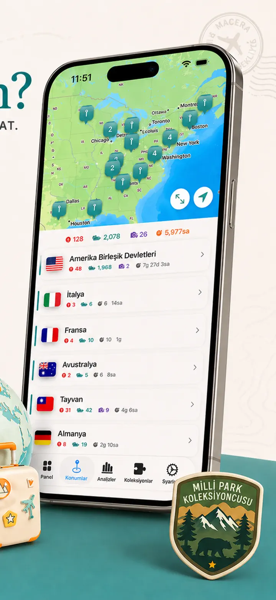
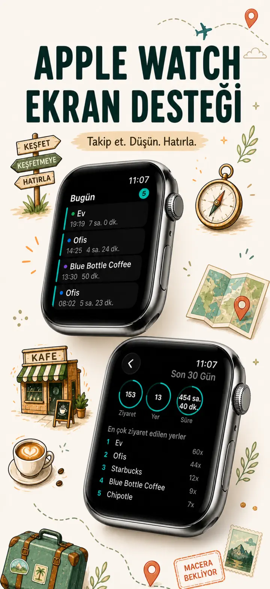
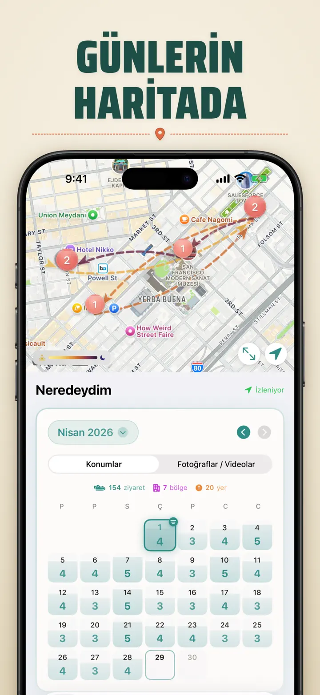
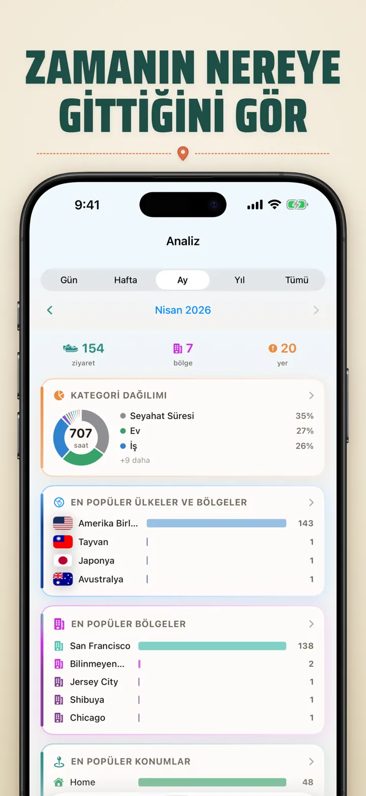
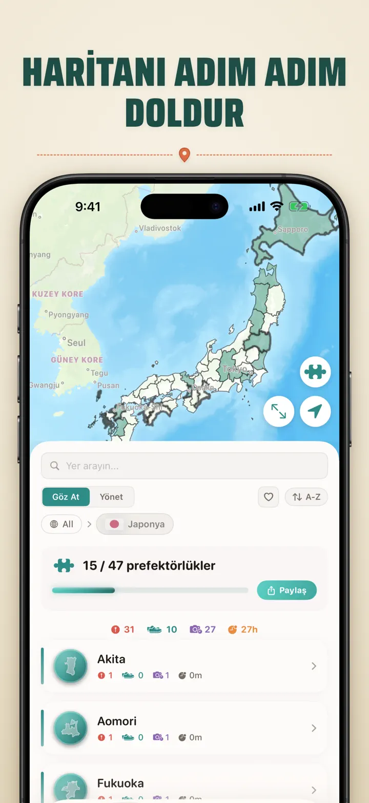
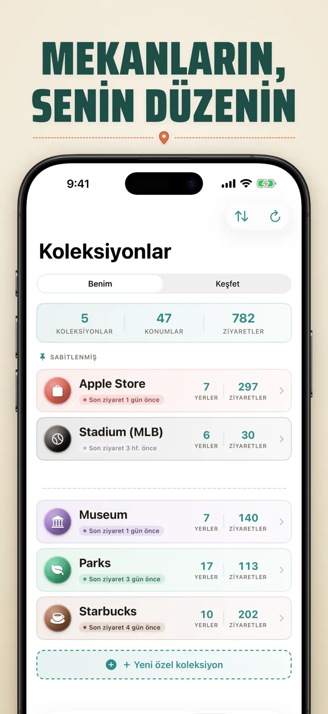
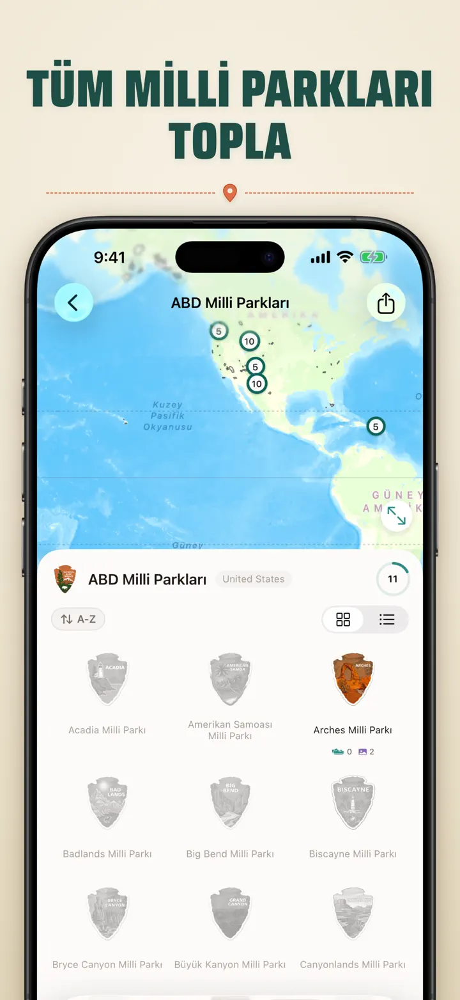
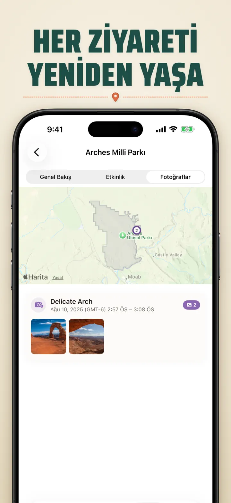

Neredeydim
Otomatik seyahat ve konumlar
Yeni: Japonya'nın 103 Ichinomiya tapınağı, her biri kendi oyma rozetiyle. Otomatik ziyaret takibi ve özel zaman tüneli, tümü cihazınızda.
App Store’dan indirUygulama hakkında
Where was I ? — Kişisel Konum Hafızanız
Geçen ay gittiğiniz harika restoranı hatırlamaya çalıştınız mı? Where was I ? ziyaretlerinizi otomatik kaydeder ve hayatınızın zarif bir zaman tünelini oluşturur.
OTOMATİK TAKİP
Manuel kayıt gerekmez. Uygulama gelişinizi ve ayrılışınızı sessizce kaydederek çaba göstermeden ayrıntılı bir ziyaret geçmişi oluşturur.
AKILLI TAKVİM GÖRÜNÜMÜ
Ziyaretlerinizi gün, hafta veya ay olarak görün. Sezgisel takvim, ziyaret sayılarını ve farklı yerleri tek bakışta gösterir. Nerede olduğunuzu görmek için bir güne dokunun.
ANA EKRAN VE KİLİT EKRANI WIDGET'LARI
Orta boy Ana Ekran widget'ı ile en son ziyaretlerinizi görün. Kilit Ekranı widget'ları mevcut konumunuzu, canlı kalış süresi sayacını veya bugünkü ziyaret sayınızı gösterir — tümü dokunulabilir.
DÜZENLİ KONUMLAR
Konumlar otomatik olarak bölge ve şehre göre gruplanır. Ev, İş, Spor Salonu veya Kafe gibi özel kategoriler atayın. Yaşam tarzınıza uygun, kendi simge ve renginizle kategoriler oluşturun.
GÜÇLÜ ANALİTİK
Hayatınızdaki kalıpları keşfedin:
- Kategorilere göre zaman dağılımı
- En çok ziyaret ettiğiniz yerler
- Haftalık ritim analizi
- Ziyaret sıklığı eğilimleri
- Konum başına kalış süresi grafiği — gün, hafta, ay veya yıla göre kalış sürenizi görün
ÜLKE BÖLGE KOLEKSİYONU
Seyahatlerinizi bulmacaya dönüştürün! Her ülkede kaç eyalet veya bölge ziyaret ettiğinizi görün. İlerlemenizi bulmaca görseli olarak paylaşın.
MİLLİ PARK İLERLEMESİ
Doğanın tadını çıkarın! Milli park ziyaretlerinizi otomatik kaydedin ve ilerlemenizi günlük konumlarınızla takip edin.
100 ÜNLÜ JAPON KALESİ
Japonya'yı geziyor musunuz? Yeni dahili bir koleksiyon, ülkenin 100 ünlü kalesine ziyaretlerinizi takip eder. Koleksiyonlar sekmesi → Keşfet → Japonya'da bulun.
ÖZEL KOLEKSİYONLAR
İstediğiniz her şeyi takip edin — Apple Stores, müzeler, kitabevleri. Koleksiyon oluşturun, anahtar kelimeler belirleyin, otomatik dolsun. Her koleksiyon sayım, geçmiş ve harita gösterir.
KONUM GEÇMİŞİNİZİ İÇE AKTARIN
Başka bir uygulamadan mı geliyorsunuz? Tüm geçmişinizi yanınızda getirin — biçim otomatik algılanır, büyük dışa aktarımlar işlenir ve içe aktarmadan önce bir önizleme görürsünüz:
- Google Timeline (Google Maps dışa aktarımı veya Google Takeout)
- Arc Timeline (Arc'tan dışa aktardığınız aylık .json dosyaları)
- Moves (ProtoGeo / Facebook Moves yedeği)
TOPLU YÖNETİM
Tüm konumlarınızı tek yerden yönetin. Arayın, sıralayın ve filtreleyin. Birden fazla konumu seçerek toplu kategorize edin veya silin. Konum kütüphanenizi düzenli tutun.
ÖNCE GİZLİLİK
Konum verileriniz cihazınızda kalır. Hesap gerekmez. Sunuculara veri gönderilmez. Hareketleriniz size aittir.
ŞUNLAR İÇİN MÜKEMMEL:
- İş saatlerini ve konumlarını takip etmek
- Ziyaret ettiğiniz restoran ve mağazaları hatırlamak
- Günlük rutininizi analiz etmek
- Seyahat günlüğü tutmak ve milli park ziyaretlerini kaydetmek
- Masraf raporu ve kilometre takibi
- Zaman dağılımınızı anlamak
ÖZELLİKLER:
- Otomatik varış ve ayrılış algılama
- Günlük ziyaret zaman tünelli takvim görünümü
- Deep-linking destekli Ana Ekran ve Kilit Ekranı widget'ları
- Bölge ve şehre göre konum gruplama
- Simge ve renkli özel kategoriler
- Apple Haritalar'dan akıllı kategori önerileri
- Süreli ayrıntılı ziyaret geçmişi
- Konum başına kalış süresi grafiği (gün / hafta / ay / yıl)
- Öngörülerle dolu analiz panosu
- Konum arama ve filtreleme
- Paylaşılabilir bulmaca görselli ülke bölge koleksiyonu
- Milli park ilerleme takibi
- Dahili 100 Ünlü Japon Kalesi koleksiyonu
- Anahtar kelime otomatik eşleştirme, elle düzenleme ve istatistikli özel koleksiyonlar
- Toplu konum yönetimi
- Google Timeline, Arc Timeline ve Moves'tan içe aktarma
- Dışa aktarma özellikleri
- Hesap gerekmez
- Gizlilik odaklı tasarım
Konum hafızanızı bugün oluşturun. Where was I ? indirin ve nerede olduğunuzu asla unutmayın.
Gizlilik Politikası: https://masawata.net/privacy-policy.html Kullanım Koşulları: https://www.apple.com/legal/internet-services/itunes/dev/stdeula/
Ekran görüntüleri








Neredeydim
Yeni: Japonya'nın 103 Ichinomiya tapınağı, her biri kendi oyma rozetiyle. Otomatik ziyaret takibi ve özel zaman tüneli, tümü cihazınızda.
App Store’dan indir